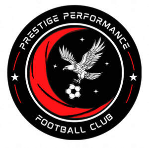

Trade Mark Journal No.2025/027 4 July 2025
UK00004219842 16 June 2025 (25,35,41)

- Class 25
- Clothing; Knitwear [clothing]; Jackets [clothing]; Ready-to-wear clothing; Garments for protecting clothing; Linen clothing; Gloves as clothing; Clothes; Jerseys [clothing]; Shorts [clothing]; Silk clothing; Collars [clothing]; Knitted clothing; Windproof clothing; Hoods [clothing]; Embroidered clothing; Wristbands [clothing]; Waterproof clothing; Rainproof clothing; Casual clothing; Jackets being sports clothing; Jackets (Stuff -) [clothing]; Stuff jackets [clothing]; Playsuits [clothing]; Bottoms [clothing]; Ready-made clothing; Clothing for leisure wear; Latex clothing; Trunks being clothing; Drawers [clothing]; Drawers as clothing; Clothing for sports; Sports clothing; Athletic clothing; Leisure clothing; Sports shirts; Sports jerseys and breeches for sports; Sports jerseys; Footwear for sports; Sports footwear; Sports bras; Sports [Boots for -]; Peaked caps; Clothes for sports; Sports garments; Articles of sports clothing; Sports clothing [other than golf gloves]; Clothes for sport; Sports jackets; Sports shoes; Sports wear; Footwear not for sports; Footwear for sport; Footwear for use in sport; Sports vests; Sports pants; Sports bibs; Boots for sports; Moisture-wicking sports shirts; Parts of clothing, footwear and headgear; Sports socks; Sport shirts; Sport shoes; Moisture-wicking sports bras; Water-resistant clothing; Moisture-wicking sports pants; Articles of clothing; Beach clothing; Gloves [clothing]; Athletic footwear; Clothing for children; Sports over uniforms; Men's clothing; Sportswear; Sports caps; Bodies [clothing].
- Class 35
- Retail services connected with the sale of clothing and clothing accessories; Promotion of sports competitions and events; Promotion of goods and services through sponsorship of sports events; Promotional management for sports personalities; Promotion of goods and services through sponsorship of international sports events; Promotion [advertising] of concerts; Promotion [advertising] of business; Promotion [advertising] of travel; Agency services for promoting sports personalities; Business promotion; Advertising and promotion services; Advertising services for the promotion of beverages; Advertising, marketing and promotion services; Marketing, advertising and promotion services; Publicity and sales promotion services; Promotion services; Promotion services relating to esports events; Modeling for advertising or sales promotion; Publicity and sales promotion; Modeling services for advertising or sales promotion; Brand creation services (advertising and promotion); Modelling for advertising or sales promotion; Sales promotion; Organization of fashion parades for sales promotion purposes; Sales promotion services; Promotion of special events; Promoting services for baseball game; Business promotion services; Advertising services for the promotion of e-commerce; Business management of sporting clubs; Promotion, advertising and marketing of on-line websites; Advertising and promotion services and related consulting; Business management of sports personalities; Modelling and models for advertising or sales promotion; Advertising particularly services for the promotion of goods; Consultancy relating to advertising and promotion services; Administration of sales promotion incentive programs; Business management of sports people; Promotion of goods and services through sponsorship; Sales promotion using audiovisual media; Computerised business promotion; Modelling agency services for sales promotion purposes; Promotional management of celebrities.
- Class 41
- Organising of sports events and of sports competitions; Organising of sports competitions and sports events; Sports club services; Organising of sports and sports events; Competitions (Organization of sports -); Organization of sports competitions; Sports and fitness; Organisation of sports competitions; Education, entertainment and sports; Sports and fitness services; Organization of electronic sports competitions; Sports training; Training in sports; Sports coaching; Organisation of sporting competitions and sports events; Providing facilities for sporting events, sports and athletic competitions and awards programmes; Sports activities; Competitions (Organising of sports -); Organising of sports competitions; Sports competitions (Organising of -); Organisation of sports tournaments; Sports coaching services; Organisation of sports events in the field of football; Sports entertainment services; Conducting of sports competitions; Sports education services; Arrangement of sports competitions; Arranging of sports competitions; Education, entertainment and sport services; Providing online entertainment in the nature of fantasy sports leagues; Organization of sport fishing competitions; Entertainment services in the nature of a wrestling club; Ticket reservation and booking services for education, entertainment and sports activities and events; Organising of sports competitions and events; Training of sports players; Booking of sports personalities for events (services of a promoter); Coaching in the field of sports; Entertainment services relating to sport; Education services relating to sports; Management of events for sporting clubs; Sports refereeing; Services for the organisation of sports events; Hosting of fantasy sports leagues; Educational services relating to sports; Organization of competitions [education or entertainment]; Competitions (Organization of -) [education or entertainment]; Organization of competitions for education or entertainment; Conducting of sports events; Organising of sports events; Sports officiating; Tournaments (Staging of sports -); Organisation of competitions [education or entertainment]; Organisation of competitions (education or entertainment); Competitions (organisation of -) [education or entertainment]; Organisation of competitions for education or entertainment; Providing sports news; Coaching services for sporting activities; Fan club services (entertainment); Training courses in strategic planning relating to advertising, promotion, marketing and business; Providing online newsletters in the fields of sports entertainment; Sports camp services; Educational and training services relating to sport; Organising of sporting activities and of sporting competitions; Organizing and conducting college sport competitions; Organization of entertainment competitions; Provision of sporting competitions; Organisation of sporting activities and competitions; Entertainment in the nature of football games; Providing facilities for sports tournaments; Sports instruction services; Rental services relating to equipment and facilities for education, entertainment, sports and culture; Instruction in sports; Organization of sporting events and competitions; Organisation of sports tuition; Officiating at sports contests; Providing sports entertainment via a website; Organisation of entertainment competitions; Organising of sporting events, competitions and sporting tournaments; Social club services for entertainment purposes.
Aaron Crichlow-Watson